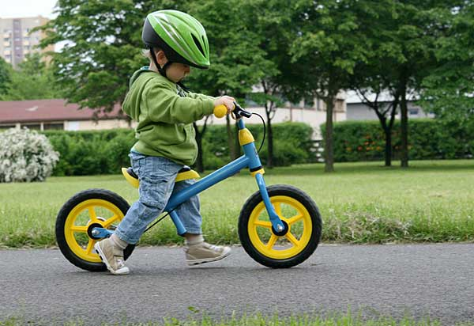

Nuestro cerebro tiende a pasar por alto soluciones que involucren eliminar cosas.
Un estudio de Nature evaluó a dos grupos en 8 ejercicios.
Para los 8 ejercicios, un grupo no recibió pistas sobre remover como mejor solución. El segundo grupo sí lo recibió.
Descubrieron lo siguiente:
-
Cerca de un 40% persona del grupo sin pista piensa en remover como solución.
-
Este porcentaje aumenta al 60% en el grupo que sí recibió las pistas.
Cuando solucionamos problemas típicamente pensamos en qué podemos agregar para hacerlo mejor.
No nos preguntamos qué podemos remover para mejorarlo.
La imagen de arriba es un caso genial donde remover consigue mejores diseños.
Tomo años que alguien pensara en que remover los pedales era mejor que agregar rueditas a la bicicleta.
Ahora que lo sabes, antes de empezar un nuevo proyecto, recuerda los mantras clásicos:
Menos es más
Keep it simple
Porqué a tu cerebro le cuesta hacerlo por sí solo.